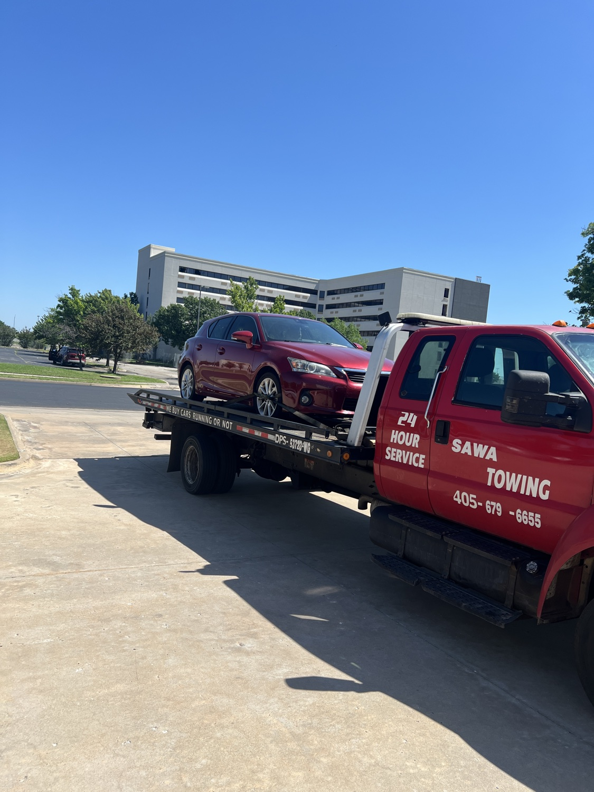

Frequently Asked Questions
Straight answers before you call (405) 679-6655

Direct answers about our 24/7 towing and roadside assistance, service area, starting prices, and what to expect when you call.
Are you open 24 hours?
Yes. Sawa Towing LLC is available 24 hours a day, 7 days a week for towing and roadside assistance in Oklahoma City and Edmond. Call to confirm current availability and receive an estimated arrival time.
What areas do you serve?
We serve Oklahoma City and Edmond, Oklahoma. If you are nearby but outside those areas, call with your exact location so we can confirm whether service is available. See our service areas and our dedicated Edmond towing page.
How much does a tow cost?
Local towing starts at $80. The final price depends on the vehicle, pickup location, destination, distance, and job conditions. Call for a quote before dispatch.
How much is roadside assistance?
Jump-starts, car lockouts, and fuel delivery start at $50. Tire changes, winch-outs, and other services are quoted based on the job. Ask for the complete price when you call. Learn more: jump-starts, lockouts, fuel delivery, tire changes, winch-outs.
What towing services do you provide?
We provide light- and medium-duty towing for cars, sport utility vehicles, light trucks, vans, and other vehicles suited to our equipment. We also provide roadside assistance and vehicle recovery. See all services.
What roadside services do you offer?
We provide jump-starts, car lockout assistance, emergency fuel delivery, and mobile tire-change help. If roadside service cannot make the vehicle safe to drive, we can discuss towing it.
Can you tow my vehicle to my preferred shop or home?
Yes. Tell us the destination when you call so distance and route can be included in the quote.
What if I am in an unsafe location?
Move away from traffic if you can do so safely. If anyone is injured or in immediate danger, call 911 first. Then call Sawa Towing and explain the scene so we can plan the safest response.
What information should I provide when I call?
Share your exact location, vehicle year, make and model, what happened, whether the vehicle can roll or steer, and where you want it taken. Mention parking garages, gates, soft ground, ditches, accident damage, or other access concerns.
Can you help if my car is stuck?
We provide winch-out and vehicle recovery service for accessible situations such as mud, soft ground, ditches, and accident scenes. The price and equipment depend on the vehicle position and recovery conditions. See winch-out & recovery.
How do I request service?
Call Sawa Towing LLC at (405) 679-6655. We will ask about your location, vehicle, problem, and destination, then confirm availability, price, and an estimated arrival time.
Still have a question?
Call Sawa Towing for clear answers before dispatch. Open 24 hours.